Belkin International, Inc.
Wemo Smart Dimmer Setup
Setting up a smart dimmer switch involves wiring, calibrating brightness levels, and connecting to a smart home app. I designed physical and mobile app guidance to support users through these steps.
Timeframe
Apr 2020 – Nov 2020
Product Type
Mobile app
Smart home device
Printed setup guide
How-to video
Team
UX manager
UI designer
Copywriter
UX researcher
Design program manager
17+ additional teams
My Role
- UX Designer
- Interaction Designer
- Video Script Writer
- Hand Model
Objective
Guide users to quickly and easily install and set up their new smart dimmer switch.
Context
Smart home owners must overcome complex wiring, WiFi connection, and calibration to get started
Setting up a smart dimmer is not a simple process, because it involves interacting with electrical wiring in a home and can have safety risks.
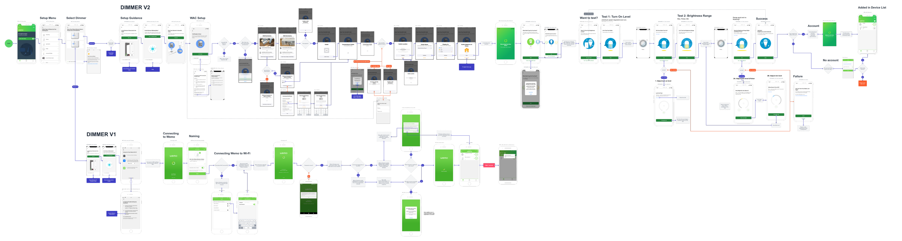
How UX Helps
Clear guidance and helpful tips can make a difference
Many users find the process daunting and stressful. At each step of the way, UX has the opportunity to improve this through clear guidance, simple language, and helpful tips.
Ultimately, the user's goal is to quickly and conveniently adjust the brightness of lighting in their home just how they want it. Making setup as painless as possible gets them to this goal more easily and with more enjoyment.
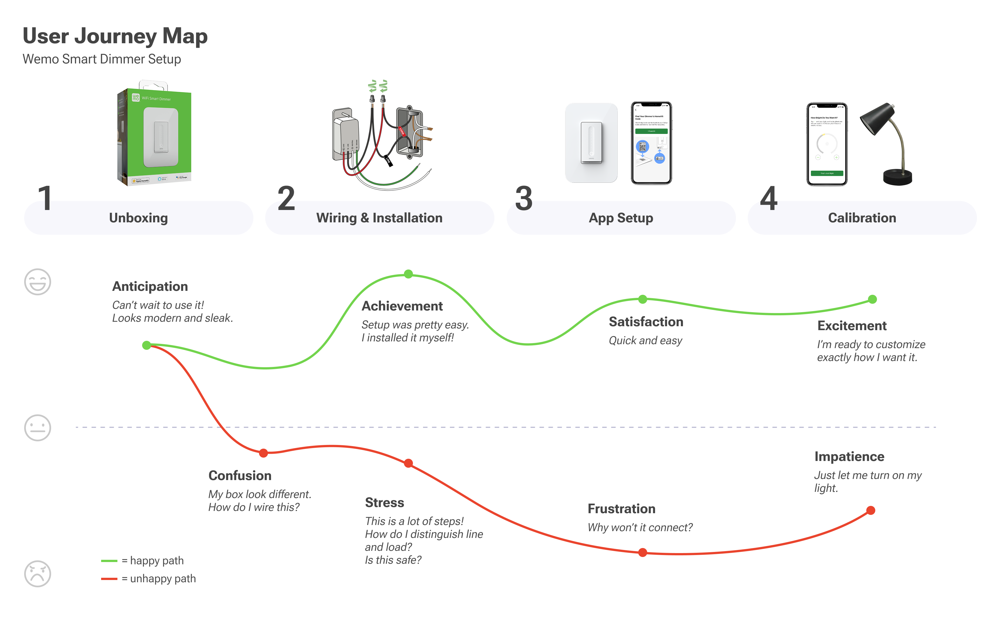
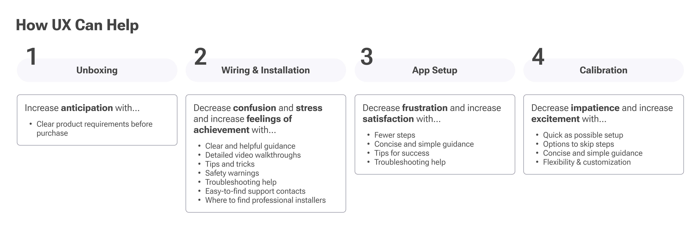
Who's Setting These Up?
Because of the risk involved, guiding all consumers is not feasible
Most users who install smart switches themselves tend to be experienced handy types or pros, but our target customer for this dimmer does include people with less experience. For example, homeowners that get smart home products as gifts or novice DIY enthusiasts.
Through user testing, we learned that some of these novice users would require an extreme level of detail and hand-holding, which would still be unlikely to lead to success. We decided to focus on disclaimers and recommendations for professional help for these users.
We focused on guiding the cautious DIY learners to experienced professionals
By limiting our target audience for guidance, we could balance clarity and brevity.
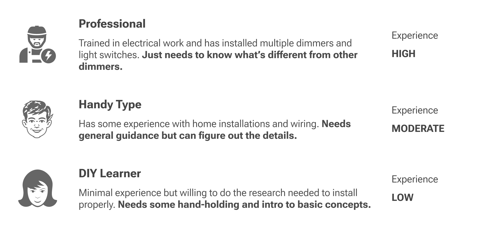
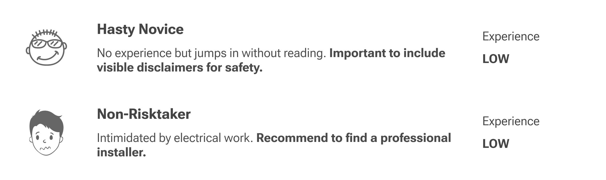
Wiring the Dimmer
Users need clear visuals and explanations for the 10 possible wires they must connect, plus safety tips to ease concerns
From NPS surveys, beta testing, and review of the previous dimmer's setup experience, I identified areas of improvement and focused design concepts on those areas.
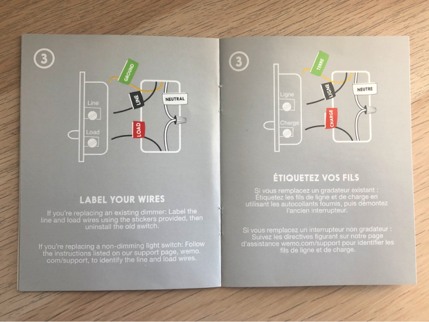
Previous dimmer setup guide
- Lacked clear explanation of how to distinguish line and load wires
- Guidance was very high level
- Assumed user would figure most of it out
- Only targeted users with more experience
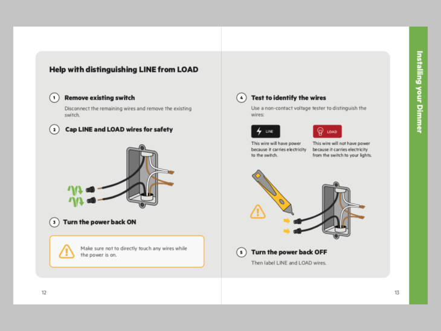
Updated dimmer setup guide
- Added guidance for distinguishing line and load
- Included more detail and tips in each step
- Highlighted important points and safety warnings
- Targets a novice DIY learner and up
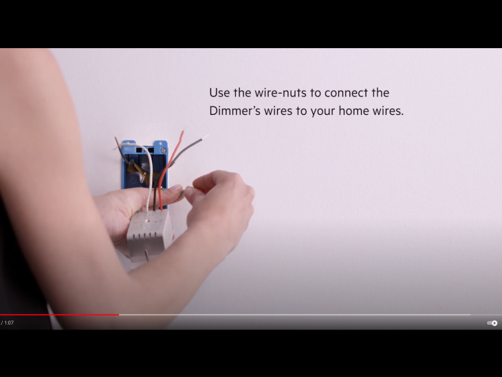
Previous dimmer setup video
- 1 min long overview
- Lacked clear and specific guidance
- Didn't show all the wiring steps
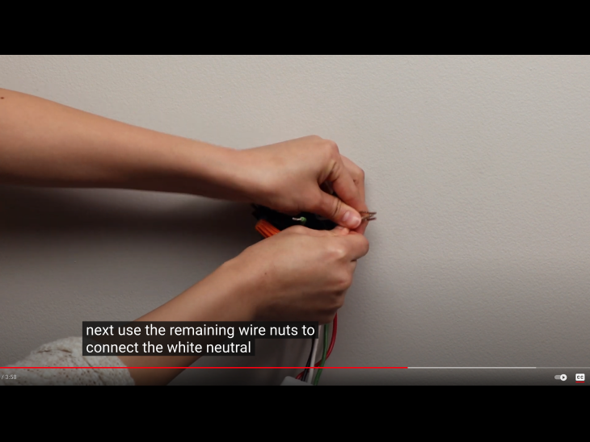
Updated dimmer setup video
- 4 min long
- Walks through each step in detail
- Specifies and clearly shows each wire the user needs to interact with
WiFi Connection and Calibration
Reliability is the top issue, but UX helps by improving clarity and flexibility
In the NPS surveys, users mentioned connection and drop-offs as a top issue (20% of all responses). I emphasized the importance of this to the engineering teams. Additionally, users mentioned limitations in how bright or dim their bulbs would go.
Calibration allows users to set the minimum and maximum brightness levels of the dimmer. I focused on improving clarity of guidance in this process to increase likelihood of success in getting the brightness levels users want.
I also updated the flow to allow users to skip the process and go with defaults, as the goal of most users is to just get their product working. Calibration adds up to 15 more steps to the app setup experience.
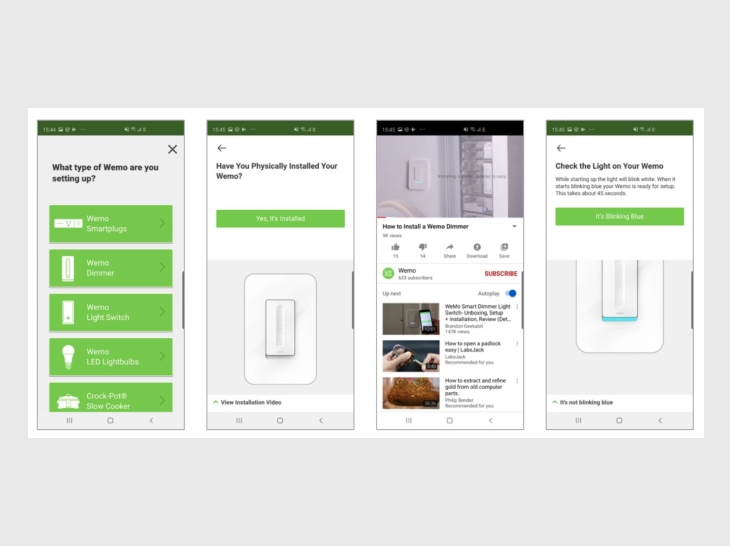
Previous dimmer app setup flow
- Only included Dimmer V1
- Some lack of clarity in copy
- Requires calibration
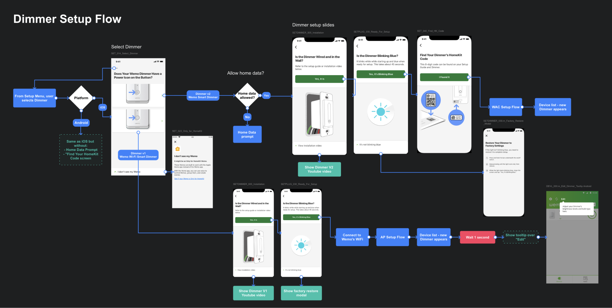
Updated dimmer app setup flow
- Includes Dimmer V1 and V2
- Improves clarity of copy
- Adds new types of setup with Apple Home app
- Allows user to skip calibration and go with defaults
- Provides more troubleshooting help
User Testing
Testing virtually with users in a pandemic
I worked with our UX Research Manager to user test our new setup experience. Unfortunately, with the COVID pandemic coinciding with this work, we needed to test the experience remotely. To make the experience as realistic as possible, we had participants explain and guide a remote facilitator (me) to set up a real dimmer switch live.
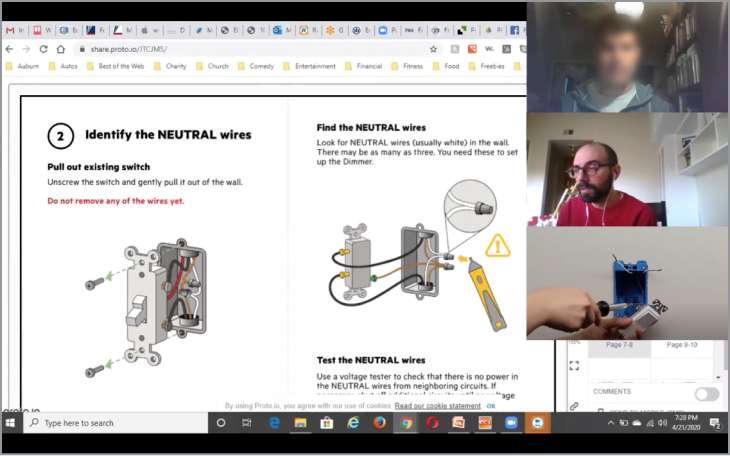
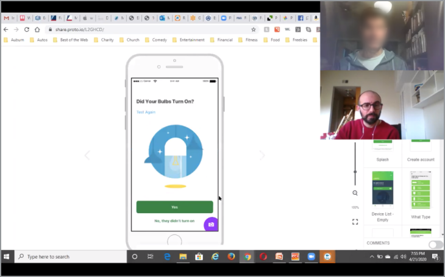
Handoff
Setup guide UX, app user flows, and an outline of the instructional video were handed off to the respective teams
After iterating and refining designs and UX flows, I handoff the work to other team members.
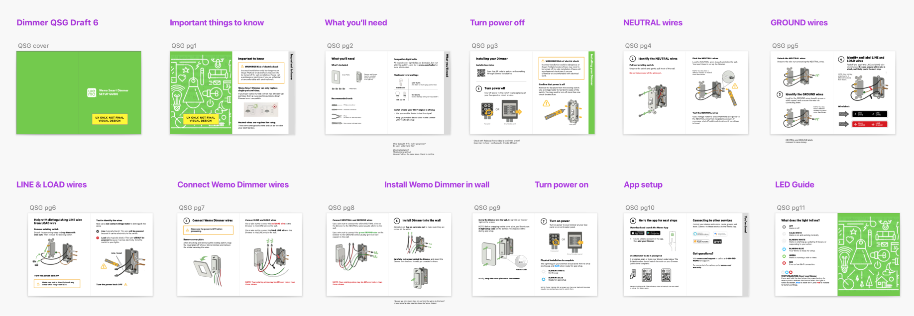
How Did We Do?
Users expressed positive feedback on usability in beta testing
Beta testing results with 19 participants showed overall positive results for usability.
Setup Guide Clarity
89%
participants who rated "clear" or "very clear" in beta testing
App Setup Ease
89%
participants who rated "easy" or "very easy" in beta testing
Reflection
Importance of following up
Though we had wonderful results from beta testing, to really measure success we needed to continue to follow up on user reactions and reviews of the product, especially once it was out in stores. Unfortunately, with other project priorities and limited resources, we were unable to keep up with this.
The video walkthrough for the dimmer was also published later than the launch date of the product, which likely led to a less ideal setup experience for many customers who bought it early on. Looking back on product reviews now, ratings declined over time, and I wonder how many of those issues could have been prevented or fixed with better follow up.